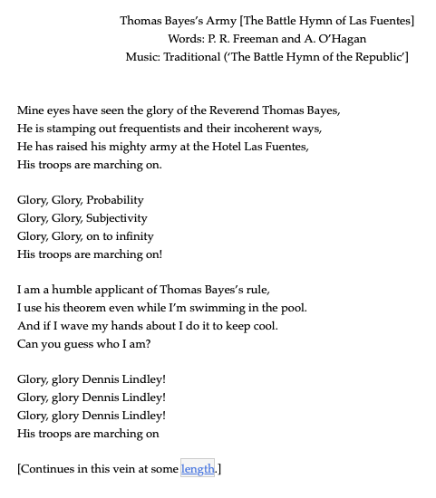

Math 32
Slides
m32slides
Categories
All
(30)
21: Change of Variables
Let
\(F\)
be the…
Mar 15, 2023
Derek Sollberger
20: Correlation
We will once again visualize the act of ordering food at In-n-Out.
Mar 13, 2023
Derek Sollberger
19: Covariance
We will once again visualize the act of ordering food at In-n-Out.
Mar 8, 2023
Derek Sollberger
18: Linear Operators
\[{\col…
Mar 6, 2023
Derek Sollberger
17: Continuous Joint Distributions
The joint probability density function
\(f(x,y)\)
to handle simultaneous calculations of random variables
\(X\)
and
\(Y\)
can be expressed as
Mar 3, 2023
Derek Sollberger
16: Discrete Joint Distributions
The joint probability mass function (joint PMF) to handle simultaneous calculations of random variables
\(X\)
and
\(Y\)
can be expressed as
Feb 27, 2023
Derek Sollberger
15: Normal Distribution
Let us start with the mother function
\(y = e^{-x^{2}}\)
Feb 24, 2023
Derek Sollberger
14: Exponential Distribution
The inclusive versus exclusive variation in inequalities matter in discrete probability distributions. With a random variable
\(X\)
defined over a support of
\(k =…
Feb 22, 2023
Derek Sollberger
13: Continuous Distributions
You arrive at a bus stop at 10 o’clock, knowing that the bus will arrive at some time uniformly distributed between 10:00 and 10:30.
Feb 15, 2023
Derek Sollberger
12: Geometric Distribution
Here let us assume an
endless
box of chocolates with random selection with replacement of
Feb 13, 2023
Derek Sollberger
11: Cumulative Computation
Last time, we developed the
probability mass function
for the binomial distribution. The probability of choosing
\(k\)
observations among a sample size of
\(n\)
, each observation with…
Feb 10, 2023
Derek Sollberger
10: Binomial Distribution
To continue our exploration of discrete distributions, we will look at situations that have two disjoint possibilities.
Feb 8, 2023
Derek Sollberger
09: Expectation
Suppose that all of the students in Math 32 are between ages 19 and 21 inclusively with the following distribution:
Feb 6, 2023
Derek Sollberger
08: Variance
\[s^{2} = \displaystyle\frac{1}{n-1}\displaystyle\sum_{i = 1}^{n} (x_{i} - \bar{x})^{2}\]
Feb 3, 2023
Derek Sollberger
07: Measures of Centrality
The Fibonnaci Sequence
\(\{1, 1, 2, 3, 5, 8, 13, ...\}\)
is an example of a sequence where
Feb 1, 2023
Derek Sollberger

6: Bayes’ Rule (Examples)
In 2002, Paul Graham used Bayes’ Rule as part of his algorithms to greatly decrease false positive rates of unwanted e-mails (“spam”). Let
\(H^{c}\)
be the event…
Jan 30, 2023
Derek Sollberger
5: Bayes’ Rule (Concepts)
In the previous section, we studied conditional probability
\[P(B|A) = \displaystyle\frac{P(A \text{ and } B)}{P(A)}\]
and we talked about how the inverse probabilities
\(P…
Jan 27, 2023
Derek Sollberger
4: Conditional Probability
Goal: Start to consider dependence in probability
Jan 25, 2023
Derek Sollberger
03_-_Complements
Unless otherwise noted, the coin flip has two disjoint outcomes—
heads
or
tails
—with probabilities
Jan 22, 2023
Derek Sollberger
2: Inclusion-Exclusion
In order to introduce probability concepts, you will notice that many sections of this…
Jan 20, 2023
Derek Sollberger
Introduction
Lecturer: Derek Sollberger
Jan 17, 2023
Derek Sollberger
24: Linear Regression
Goal
: Summarize bivariate data
Nov 28, 2022
Derek Sollberger
23: Maximum Likelihood
Goal
: Modify distribution parameters based on observed data
Nov 17, 2022
Derek Sollberger
22: Central Limit Theorem
Goal
: Consolidate our understanding of variance
Nov 15, 2022
Derek Sollberger
21: Estimators
Goal
: Explore generalization from samples to populations
Nov 10, 2022
Derek Sollberger
20: Law of Large Numbers
Goal
: start to understand error as it relates to sample size
Nov 8, 2022
Derek Sollberger
19: Poisson Process
Goal
: Derive distribution of number of arrivals
Nov 3, 2022
Derek Sollberger
Confidence Intervals
Source:
Statistical Inference via Data Science:
A Modern Dive into R and the Tidyverse
Invalid Date
[your name]
Case Study: Yawning
After each code block, to the best of your current ability, describe what the
R
code is doing.
Invalid Date
[your name]
Hypothesis Testing
Source:
Statistical Inference via Data Science:
A Modern Dive into R and the Tidyverse
Invalid Date
Derek Sollberger
No matching items